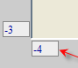

GFE is a free online function graphing tool that allows you to plot up to three functions on the same set of axes. In the functions you can refer to up to four independent variables that are controlled by sliders. This allows you to easily see the effect of changes since the graphs change in real time as you drag the sliders.
Enter a formula into one of the three input boxes ( f(x), g(x), or h(x) ),
then press GRAPH or the keyboard
Enter key. For example:
Press Clear, then in the top function box (f(x)) enter "cos(x)" then press GRAPH or the Enter key on the keyboard.
The function will be plotted in the window above.
The syntax rules are the same as for the typed-in expressions for the Math/Scientific Calculator.
| Function | Typed in |
| Add | + |
| Subtract | - |
| Multiply | * |
| Divide | / |
| Exponent | ^ |
GFE has the following built-in functions. The function names are not case sensitive. Example: sin(x) is the same as Sin(x). All trigonometric functions operate in radians.
| Function | Example | Description |
| Sine | sin(x) | The trigonometry sine function, x in radians. |
| Cosine | cos(x) | The trigonometry cosine function, x in radians. |
| Tangent | tan(x) | The trigonometry tangent function, x in radians. |
| Secant | sec(x) | The trigonometry secant function, x in radians. |
| Cosecant | csc(x) | The trigonometry cosecant function, x in radians. |
| Cotangent | cot(x) | The trigonometry cotangent function, x in radians. |
| Arc Sine | asin(x) | The angle in radians whose sine is x. |
| Arc Cosine | acos(x) | The angle in radians whose cosine is x. |
| Arc Tangent | atan(x) | The angle in radians whose tangent is x. |
| Square root | sqrt(x) | The square root of x. |
| Logarithm | log(x) | The log base 10 of x. The power to which you must raise the 10 to get x. |
| Natural Log | ln(x) | The log base e of x. The power to which you must raise e to get x. |
| Exp | exp(x) | e (approx 2.718) raised to the power of x. |
| Min | min(a,b) | Returns a or b, whichever is smallest. |
| Max | max(a,b) | Returns a or b, whichever is largest. |
| Abs | abs(x) | Returns the absolute value of x (always positive or zero) |
| Pow | pow(x,y) | Returns x raised to the power y. pow(2,3) = 8 |
| Round | round(x) | Returns x rounded off to the nearest whole number |
| floor | floor(x) | Returns the highest integer less than or equal to x |
| ceil | ceil(x) | Returns the smallest integer greater than or equal to x |
If a function (such as sin() ) is preceded by a number, GFE assumes you want to multiply them. For example 3cos(2.1) will be automatically treated as if you entered 3*cos(2.1): three times the cosine of 2.1. It will not work if the function is preceded by a variable name.
Note: This feature can mislead you. For example if you enter 1/2sin(x) GFE inserts a multiply between the 2 and the sin. Since there are no parentheses, it is executed from left to right so it sees it as one half of sin(x). You may have meant it as one over 2sin(x).
GFE can be used to plot inequalities by changing the relational operator in the pull-down menu to the left of the function. There are five possible operators:
| = | Equals | The default. The function will be plotted as a line as usual. |
| <= | Less than or equal |
The area of the graph where y is less than the function value is shaded. |
| < | Less than | As above, but the line is drawn dashed. |
| >= | Greater than or equal |
The area of the graph where y is greater than the function value is shaded. |
| > | Greater than | As above, but the line is drawn dashed. |
When plotting inequalities, the "monochrome shading" checkbox can be used. If this is checked, the shaded areas for all three functions are all the same light gray. This allows you to more easily see where complex functions overlap, since the more overlap there is, the darker the shading. If left unchecked, each function is shaded in a different color.

At each end of the x and y axis is a box containing the end values. To change them, simply edit them in place and press GRAPH or the Enter key again.GFE will check to ensure that the lower value is at the bottom of the y axis or the left of the x-axis. Negative number are allowed.
The aspect ratio (ratio of width to height) of the graph window is exactly 4:3. The initial range of values on the x and y axes are in the same ratio, so a graph of y = x will be at 45°, and circles would be round, not squashed into ellipses. However, if you change the axis limits, this may no longer be true.
When you enter your equations, you can refer to up to four variables that are controlled by sliders. These are named a, b, c and d, and you can adjust the value of each variable by moving the slider up or down. You can also enter an exact value into the box at the top of the slider, followed by the GRAPH button or the Enter key.
For example, in the chart above, press 'reset'. Note that the first function is sin(a*x). This means that each time a point is plotted, it is the sine of the current value of x multiplied by the variable a. This variable is controlled by the a slider on the right, so as you move the slider you can see the effect of varying its value. *
You can change the range of the slider by clicking on "range" below it. A dialog will appear that allows you to set the range of each slider separately.
* If you are curious: the sine curve shown is sometimes called a sine wave. The slider a is controlling the frequency of the wave. See Sine wave.
Click on "full size" under the chart window. A new window will open with a new instance of GFE in it that is as large as your monitor will allow. This can be useful in a classroom with a projector.
Note: The large version is a copy of the normal-size one. Any changes you make to the large one will not be copied back to the original when you close it.
Safari users: This will be ignored if the browser is set to block pop ups - the default in Safari. (This blocking should not strictly happen, since the pages come from the same domain).
Once you have the charts exactly as you want them, you can click on 'Make Link' below the applet. This will build a link to the chart that you can paste into a web page or Word document. When you later click on that link, the chart will come up exactly as you want it immediately. Also, by pasting the address back into the browser address bar and pressing Enter, you can then save the chart as a browser bookmark or favorite.
For example, you could set up a chart with all the functions and ranges as you want them for a lecture. Then, in the lecture, by clicking on this link, the chart will come up that way immediately. You can set up an unlimited number of different charts this way.Note: Some programs cannot handle URLs beyond a certain length. (E.G. Microsoft Word has a 256 byte limit). Certain very complex charts may produce URLs that are longer than this.
Safari users: Safari defaults to suppress popups. In theory, this should not prevent this feature working, but it does. If you do not see the dialog to get the link, adjust the browser preferences to allow popups.
You can construct these links yourself if you prefer. see 'Customizing GFE' below.
By checking this box, the sliders will only stop on whole numbers.
Normally, when GFE starts up it displays a default chart. You can alter what is initially displayed by attaching parameters to the URL of the web page. You can override some or all the controls to display whatever initial chart you would like.
For instructions see Customizing the General Function Explorer (GFE). But the easiest way is to use "save as link" as described above.